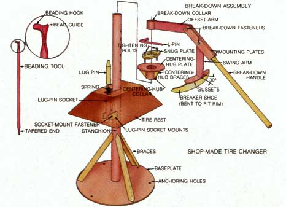
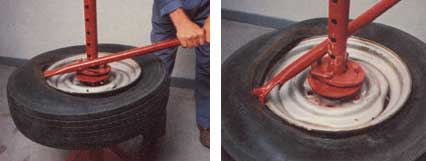
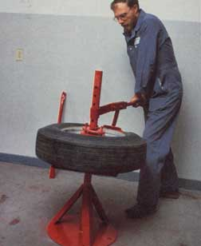
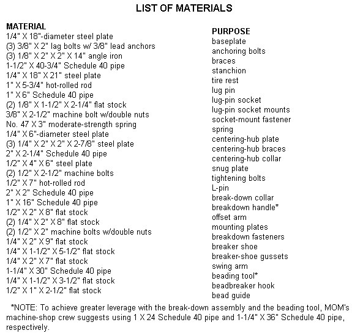

To many folks, changing the tires on a vehicle means a biannual trip to the local shop to swap snow treads for some summer tires, and perhaps a jaunt or two to pick up a newly patched flat. However-as anyone in the country can attest-changing punctured tires (say on that old workhorse pickup) can be a time-consuming chore when the nearest service station is a considerable distance away.
One summer, having spent what seemed an inordinate amount of time (and gas money) toting tattered tires to town and back, I vowed to eliminate this unnecessary expense . . . and came up with the idea of building a manual tire changer. My homemade tool-which is fashioned after the machine-shop models, with a few minor alterations incorporated into the design-has proved to be just the ticket for my tire-changing needs. And I'll wager that it would come in handy for other country folks, as well.
WHAT YOU'LL NEED
To construct the tire changer, you'll need some fundamental metalworking skills (including knowledge of welding, torch work, and basic fabricating) and the following tools: a drill with 3/8", 27/64", 1/2", and 5/8" highspeed bits, an oxyacetylene torch, a welder, a grinder, a 1/2"-13 tap, a tape measure, a hammer, and a pipe wrench (for leverage). And, although they're not necessary, an assortment of hole saws and a metal-cutting band saw will make your job easier.
Most of the tire changer's components can probably be fashioned from odds and ends around your shop, or (of course) you can buy the materials from a local scrapyard or steel supplier. Even though I purchased much of my metal from a welding shop, my tally for the tool came to just under $30 . . . and your total-even if you bought all of the material new-shouldn't come to much more than that. Furthermore, my device paid for itself in convenience in its first few uses . . . and your tool could even provide you with a bit of extra cash (or barter credit) if you offered its services to friends and neighbors. (A word of caution here, though: Don't try to change any fancy-rimmed tires until you're certain of your skill!)
METALWORKING MASTERY
As you can see from the accompanying drawing and list of materials, I made my tire changer by cutting, bending, bolting, and/or welding various sizes of Schedule 40 pipe, steel plate, and flat stock. The main assembly consists of a 1/4" X 18"-diameter baseplate . . . a 1-1/2" X 40-3/4" Schedule 40 pipe stanchion . . . three 1/8" X 2" X 2" X 14" angle iron braces . . . a tire rest, cut and bent to the shape shown . . . and a mount-and-socket lug-pin apparatus. The "accessories" for the tire changer include a centering hub, which positions the to-be-changed tire . . . a snug plate, which holds the hub in place . . . a break-down assembly . . . and a beading tool.
Because the tire changer will have to be secured to the floor of your workshop, you'll need to drill three 3/8" holes, each about 1-1/2" in from the outer edge of the baseplate, to accommodate the anchoring bolts. And, in order to be able to accommodate various tire sizes, you'll also need six 5/8" holes, located on 2" centers, in the stanchion . . . with the first bore 4" below the top of the pipe. Once those holes are drilled, you can weld the base, stanchion, and angle braces in place.
To fashion the tire rest, cut a 3" X 3" X 6" X 6" kite-shaped section from each corner of a 1/4" X 18" X 21" steel plate, then-using the largest tip of your oxyacetylene torch-heat the metal to a cherry red and, with a pipe wrench and a section of pipe for leverage, bend the sides down until the corners mesh together to create a 5-1/2" X 10" platform. (For a smoother look, you can weld the joints together; however, the mount will be sufficiently sturdy as is.) Next, cut a hole in the center of the tire rest to accommodate the 1-1/2" stanchion, and, from one side of that same opening, cut a 1-1/4" X 3" slot for the lug pin.
The lug pin-a 1" X 5-3/4" piece of hotrolled rod that's tapered (using a grinder) for the first 1-1/2" so that it will fit into a tire's lug bolt hole-sits within the lug-pin socket atop a 3" spring, which in turn rests on a 3/8" X 2-1/2" machine bolt that fastens that swiveling 1"X 6" section of Schedule 40 pipe to two 1/8" X 1-1/2" X 2-1/4" mounting plates. It really isn't as complicated as it sounds. Once the lug-pin socket mounts are welded in place 24" below the top of the stanchion, you can weld the tire rest into position 6" above the mounts.
With the main assembly together, turn your attention to fashioning the accessories. To make the centering hub, cut a 2" hole in the middle of the 1/4" X 6"-diameter plate, then simply weld the collar and braces to this metal doughnut. Next, form the snug plate by cutting a 1/2" X 4" X 6" section of steel plate into a football shape, and then boring a 2" hole in its center. Measure in 1" from each of the two longer ends of the ellipse, and drill and tap 1/2"-13 holes for the 1/2" X 2-1/2" tightening bolts. (NOTE: When fashioning the snug plate or any of the other parts that call for 1/2" steel plate, keep in mind that you can use two welded-together sections of 1/4" metal if you don't have the thicker-and more expensive-material on hand.)
Next, you'll need an L-pin, which will fit into the holes in the stanchion. To make one, heat and bend a 7" piece of 1/2" hot-rolled rod to form two 2-1/2" and 4-1/2" perpendicular legs.
To make the break-down assembly, drill two 1/2" holes, one 3-3/4" from the end and the other 3/4" from the opposite end, in each of the two 1/4" X 2" X 8" mounting plates . . . bore another 1/2" hole 3/4" from one end of the swing arm . . . and drill yet another 1/2" hole 3/4" from one end of the offset arm. Next, form the breaker shoe by cutting and bending a piece of 1/4" X 2" X 9" flat stock to fit the contour of a tire rim, as shown. Then weld on the gussets and swing arm, and grind them smooth to conform with the curve of the breaker shoe. With that done, weld the pipe collar to the offset arm, and bolt the swing arm and offset arm to the two mounting plates. Finally, insert the flattened end of the 1 " X 16" (or longer) break-down handle approximately 1" into the mounts, andafter you've made sure that the swing arm will still pivot freely-weld it into place.
The beading tool is fashioned out of 1-1/4" X 30"-or longer-Schedule 40 pipe that's been tapered for 4-1/2" on one end. The opposite end of the pipe is also flattened slightly so that it can more easily accept a weldedon 1/4" X 1-1/2" X 3-1/2" section of flat stock, which is hammered into a hook (see the enlarged diagram). A triangular bead guide, cut from 1/2" X 1" X 2-1/2" flat stock and welded to the back of the hook, completes the tool.
THE EN-TIRE TECHNIQUE
My tire changer works on the same principle as do the machine-shop models. To remove a tire from its rim, place it-valve side up-on the metal rest and fit the lug pin into the tire's lug bolt hole. The centering hub is positioned next, and on top of that piece sits the snug plate. With those parts in place, fit the L-pin in the nearest stanchion hole, and then adjust the tightening bolts to secure the rim in place. At this point, remove the valve from the tire.
Now you can set the real workhorse of the machine in action. Place the break-down assembly so that the breaker shoe sits next to the tire's rim, and then simply press down on the handle and "walk" the tool around the tire to break the bead. Then flip the tire over and repeat the procedure on the other side.
Next, insert the tapered end of the beading tool between the rim and the tire, use that lever to flip the bead above the metal lip, then walk the handle around until the edge of the tire rests on top of the rim. If your tire just needs a patched or replaced tube, you should be able to fix it while the tire rests on the mount, but if you need to free the tire, you'll have to flip it over and repeat this sequence.
To put the repaired tire back on the rim, hook the curved end of the beading tool between the tire and the rim, and push down on the bead guide to pop the rubber under the rim. Then pump the good-as-new tire full of air . . . and get ready to roll!
|
 LEFT TO RIGHT: The tapered end of the beading tool is used to flip the edge of the tire is repaired. BELOW: To break the bead, place the breaker shoe so that it sits next to the tire's rim and simply press-down assembly while ""walking"" the tool around the rim. |
 |
 |
|
 |
|
|